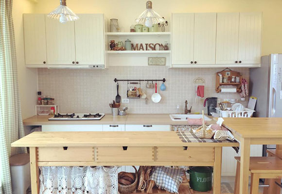
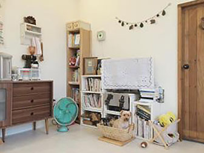
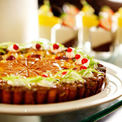
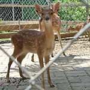
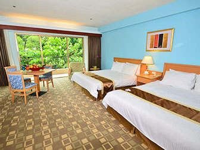
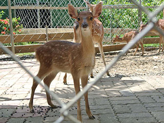
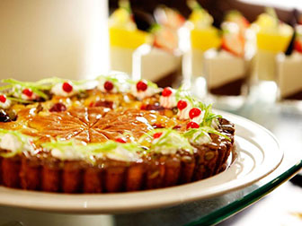
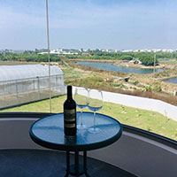
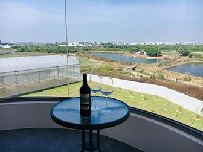

熱門推薦住宿






宜蘭日和寵物友善民宿
宜蘭日和位於冬山鄉，提供客房。 客房內將為客人提供燒水壺。這家旅館的每間客房均配有空調、平板電視和私人浴室。其他設施包括拖鞋和吹風機。宜蘭日和各處均覆蓋免費WiFi。 宜蘭日和距離梅花湖3.3公里，距離冬山河森林公園則有6公里。最近的機場為距離宜蘭日和48公里的台北松山機場。






苗栗逗號民宿
兩個毛小孩，三個願望，五個朋友，成就一個人狗共樂的夢想～願望1，替辛苦大半輩子的退役導盲犬找個樂活地方！願望2，趁興帶狗看風景，出巡回憶滿滿歡欣！願望3，有個地方，人安心，狗開心，快樂在一起蓊鬱山林、開闊草地、金色陽光、微醺和風、潺潺溪水，就是這裡




台南白毛獵人
白毛獵人距離興達港與情人碼頭 28 公里，距離正統鹿耳門聖母廟 3.4 公里。最近的機場是台南機場，距離 23 公里。 安南區是傳統美食、夜市、古城探索的絕佳選擇。 情侶特別喜歡這個位置－並給他們的雙人旅行住宿體驗 8.4 分 此住宿被評為台南性價比最高的選擇！相較城市其他相似住宿，此間住宿更物超所值！